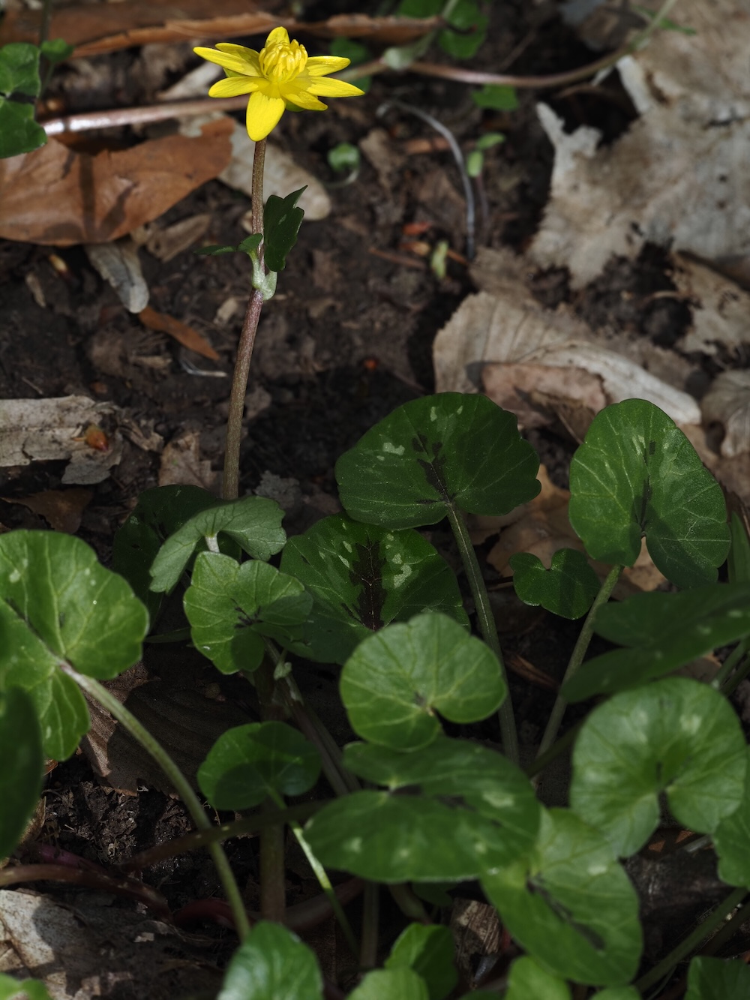

Vitamin C im Februar – der Frühstarter mit dem unterirdischen Energiespeicher.



Der perfekte Frühstarter
Das Scharbockskraut verkörpert die Geophyten-Strategie in Reinform: Im Sommer speichert es Energie in winzigen Wurzelknöllchen. Im Februar treibt es daraus heraus – ohne auf Wärme oder Bestäuber warten zu müssen. Das Lichtfenster vor dem Laubaustrieb wird maximal ausgenutzt. Im Mai, wenn die Konkurrenz übermächtig wird, zieht es sich vollständig zurück.
Scharbock = Skorbut – Geschichte eines Namens
Skorbut war eine der häufigsten Todesursachen auf Seereisen – verursacht durch Vitamin-C-Mangel nach monatelanger Schiffskost ohne frisches Gemüse. Das Scharbockskraut war im März für die Landbevölkerung oft das erste frische Grün des Jahres und damit eine lebensrettende Vitaminquelle.
Wissenswertes & Merksätze
Zwei Fortpflanzungswege
Samen durch Bestäubung UND vegetative Brutkörperchen (Bulbillen) in den Blattachseln. Die Bulbillen fallen ab und werden zur neuen Pflanze – ohne Bestäuber.
Das Glanzphänomen
Die Blütenblätter bestehen aus zwei Zellschichten, die Licht wie ein Reflektor bündeln. Für frühe Insekten wirken die Blüten besonders hell und auffällig.
Mathe der Blütenblätter
Meist 8–12 Blütenblätter – alle anderen europäischen Hahnenfussgewächse haben 5. Noch nicht vollständig erklärt – ein botanisches Rätsel.